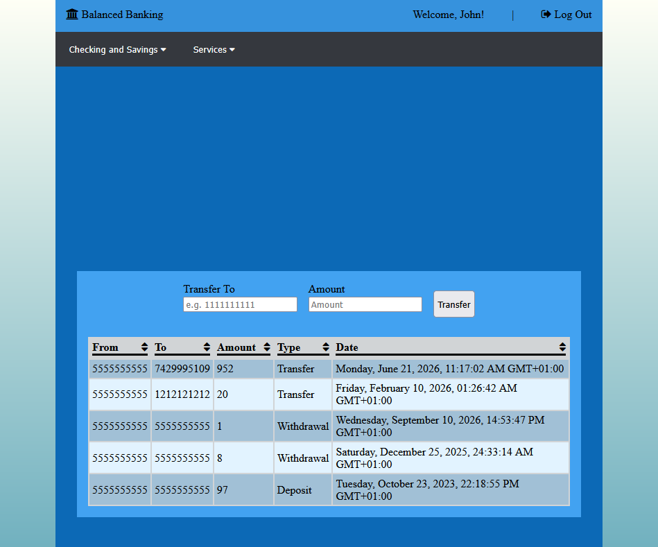
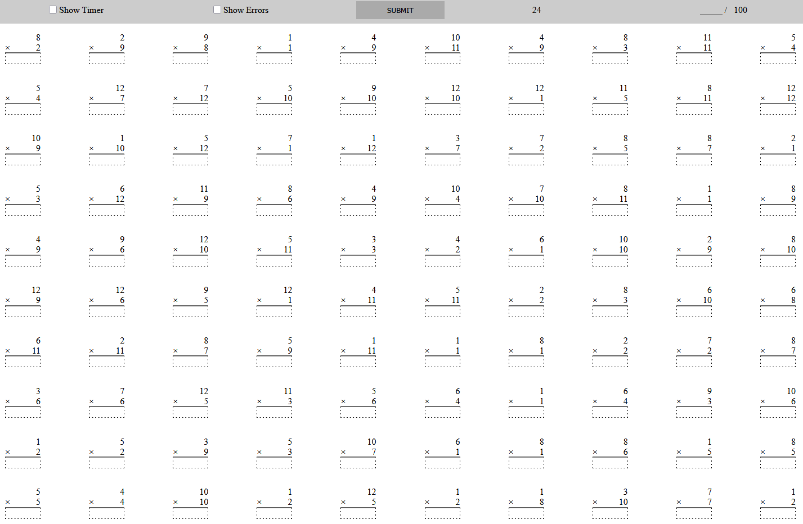
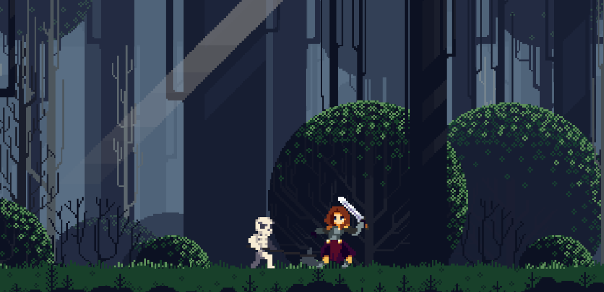
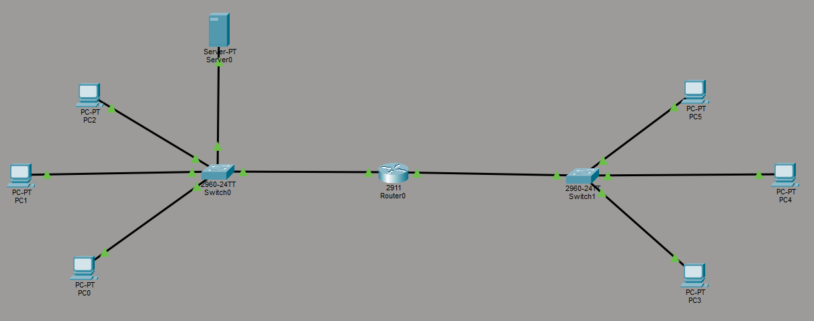
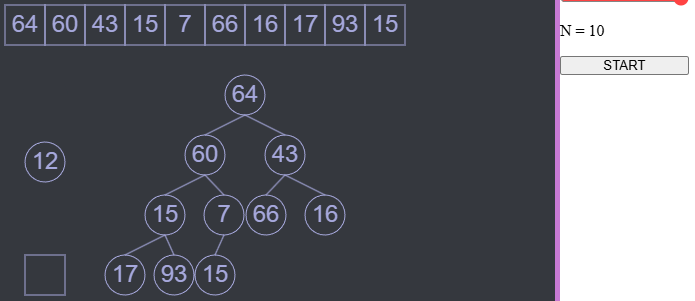
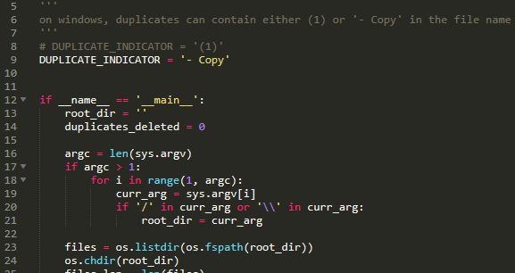
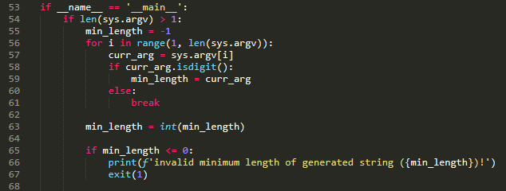
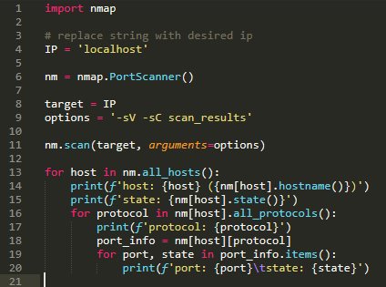
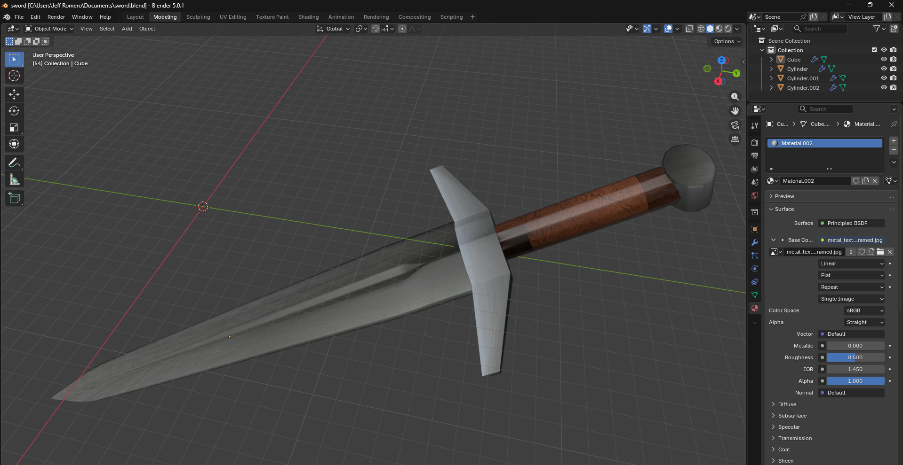

Banking App Simulation
June 2026 - Present

- Developing a full-stack simulation of a bank which supports account creation and management, loans, and fund transfers.
- Designing MongoDB Atlas database functionality to store individual account information.
- Programming an API using Node.js and Express to inferface MongoDB with Angular and TypeScript.
- Authenticates logged in users with JSON web tokens (JWT).
- Utilizes observables to handle asynchronous data streams like HTTP requests.
- Renders an emitted transaction object from an observable using @for asynchronous pipes, resulting in maintaining the object's data persistently on the DOM after a page refresh.
GitHub Repository: https://github.com/jeff-romero/banking-simulation/ Tech Stack: Angular, TypeScript, HTML, CSS, Node.js, Express, MongoDB
Math Exam
May 2026 - June 2026

- Remember those math exams from grade school where you had to solve addition/subtraction/multiplication/division equations within a set amount of time? Now you can relive that era through this project I made!
- This project currently supports multiplication problems only, and I will work on support for addition, subtraction, and division. I am currently working on timer functionality though.
Live Demo: https://jeff-romero.github.io/math-tests/ GitHub Repository: https://github.com/jeff-romero/math-tests Tech Stack: HTML, CSS, JavaScript
Unity 2D Game Practice
April 2026 - May 2026

- Created a basic 2D side-scrolling mini-game using Unity and C#. The player is able to move around the level using the A and D keys, can jump by using Spacebar, and can attack using left click on the mouse.
- By completing this practice project, I have gained knowledge in Unity 2D game development; I learned how to create animations from sprites, rigid body physics, and collision detection.
GitHub Repository: https://github.com/jeff-romero/unity-2d-practice Tech Stack: C#, Unity
Cisco Packet Tracer Labs
March 2026 - April 2026

- Strengthened my IT knowledge by simulating various computer networks and associated protocols such as DNS, DHCP, etc.
- The goal of this on-going project was to become an expert in computer networking and eventually achieve certifications such as the Security+ and the CCNA.
- Simulated a DHCP server (see picture above) with one router and two network interfaces that are capable of communicating with each other. The DHCP server provides every device on each network with automatically assigned IP addresses, subnet masks, and a default gateway which allows host-to-host communication across the two different networks.
Blackjack
February 2026 - March 2026

- Using JavaScript promises, async/await concepts, and CSS animations, with playing card assets I have drawn in Photoshop.
- Used the Fisher-Yates algorithm to shuffle playing card decks.
- Enjoyed by my dad and friend who are both gambling enthusiasts.
Live Demo: https://jeff-romero.github.io/blackjack/ GitHub Repository: https://github.com/jeff-romero/blackjack Tech Stack: HTML, CSS, JavaScript
Hacking Minigame
December 2025 - January 2026

- Recreated the hacking minigame found in the video game Cyberpunk 2077.
- Applied S.O.L.I.D. principles and JavaScript animation frames to optimize the timer on different devices and refresh rates.
- Built my own algorithm for generating random hexadecimal matrices and solutions.
Live Demo: https://jeff-romero.github.io/hacking-minigame/ GitHub Repository: https://github.com/jeff-romero/hacking-minigame-unobfuscated Tech Stack: HTML, CSS, JavaScript
Minesweeper
November 2025 - December 2025

- Used the depth-first search (DFS) algorithm to populate any cell with numbers indicating adjacent mines, and revealing empty cells on user clicks.
Live Demo: https://jeff-romero.github.io/minesweeper/ GitHub Repository: https://github.com/jeff-romero/minesweeper Tech Stack: HTML, CSS, JavaScript
Binary Tree Illustrator
October 2023 - October 2023

- Programmed a Python application to draw a binary tree when given an array of objects.
- After finishing this project, I learned how to create a binary tree when given a collection of items, and learned how those items are indexed to represent the binary tree (2i + 1, 2i + 2).
Duplicate File Finder
September 2023 - September 2023

- Coded a Python script to list all duplicate files contained within a provided directory, taking into account both the file sizes and file names.
- Finishing this script helped me understand file descriptors and how operating systems detect and deal with duplicate files.
String Generator
March 2023 - March 2023

- Developed a Python CLI script to generate a random ASCII string.
- Has functionality to customize the length and the characters included (numbers, upper/lower case letters, special characters).
Port Scanner
January 2023 - January 2023

- This project helped strengthen my networking fundamentals, such as knowledge of protocols and their associated ports. For example, HyperText Transfer Protocol (HTTP) uses port 80, and port 443 for HTTPS (HTTP secured with SSL [Secure Sockets Layer], or TLS [Transport Layer Security]).
- When provided an IP, the script will scan all ports in the network and provide a list of open ports, as well as the services running on the ports, and the protocol in use.
Credit Card Fraud Prediction
August 2021 - November 2021

- Trained a machine learning model using logistic regression to analyze and predict credit card fraud.
- Processed a data set using Python libraries such as Pandas, Matplotlib, Seaborn, Scipy, Numpy, Scikit-learn and Imbalanced-learn.
GitHub Repository: https://github.com/jeff-romero/capstone-project/ Tech Stack: Python, JupyterLab
WeblGL Skyrim Intro Scene
October 2020 - November 2020

- Using HTML, JavaScript, and WebGL, created a model of The Elder Scrolls V: Skyrim's opening sequence.
- Created the 3-D assets of the NPCs, weapons, horse, wagon, mountain, and trees using Blender and imported the models into a WebGL scene.
- The user can use the W, A, S, D, and arrow keys to control the camera movement and inspect the 3-D model.
A.M.E.L. (Aerial Mission Event Log)
January 2020 - May 2020
- Architected and programmed an iOS application which assists pilots by recording in-flight events such as chagnes in flight speed and elevation.
- Led weekly in-person and online scum meetings.
GitHub Repository: https://github.com/Dameech92/AMEL/ Tech Stack: Swift, SwiftUI